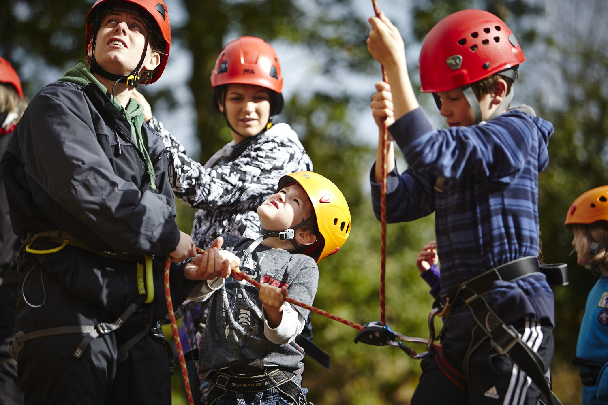

Whether camping, hostelling, or sleepovers, nights away form an integral part of Scouts.
Find your adventure →From sports and games to crafts and outdoor adventures, there's something for everyone.
Discover activities →Master something you love, or try something new. Work towards challenge badges and awards.
Explore badges →